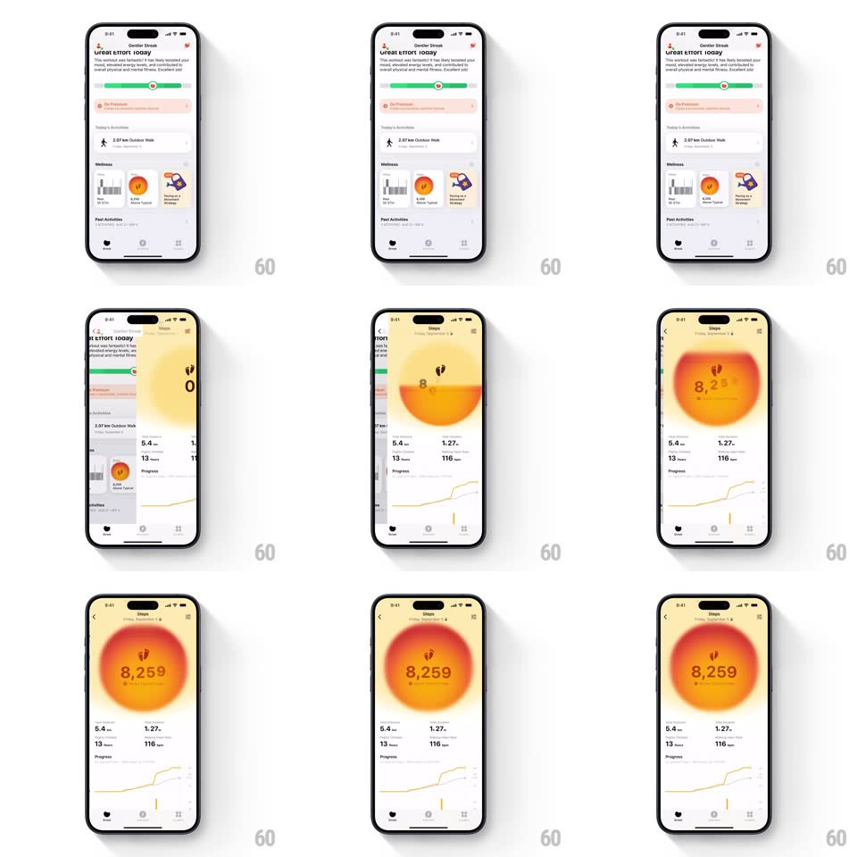

Media
Frame-by-frame

Rebuild this animation 1:1: Gentler Streak's steps detail - a big circular step-count indicator filled with a warm orange gradient breathes with a slow pulse around the "8,259" count.

Rebuild this animation 1:1: Gentler Streak's steps detail - a big circular step-count indicator filled with a warm orange gradient breathes with a slow pulse around the "8,259" count. ## Integration Integration: stack-agnostic spec - springs given as stiffness/damping, timed motions as duration + curve; map every value to your framework and animation library of choice. ## Scene Steps detail screen pushed over the Gentler Streak home: a large circle with a footprints glyph and "8,259" filled by an orange-red gradient like a setting sun, then a stat row (5.4 km distance, 1.27 km, 13 floors, 116 kcal) and a yellow Progress line chart. ## Motion spec Pattern: breathing fill pulse, ~3s loop. - The gradient fill inside the circle rises and falls gently (level +-6%, 3s, ease-in-out) while its glow blooms outward (blur 18px, opacity 30 -> 50%). - Entrance: the detail view slides in from the right (300ms); the circle scales 0.8 -> 1 (spring ~300/20, 500ms) as the fill washes up from the bottom (600ms, ease-out). - The count ticks up from 0 to 8,259 (800ms, ease-out) as the fill settles. - The Progress chart draws its line left to right (600ms, 200ms after the circle lands). ## Calibration - The pulse is slow and soft - a heartbeat-like double-beat is wrong. - Stats stay static; only the circle's fill and glow breathe. ## Reduced motion The fill sits at its final level; no glow pulse. ## Don't miss - The gradient is warm (yellow core to deep red edge) and clipped to the circle. - The pulse keeps the count legible - text contrast never shifts.